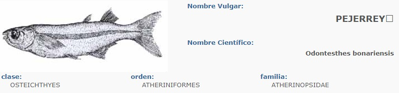

Especies en peligro de extincion en la zona
Pejerrey

Este pez se encuentra en peligro debido a la degradación de su hábitat y la sobrepesca.
Es un pez de cuerpo fino y alargado, proveniente de la familia Atherinidae el cual posee alrededor de trece géneros y un total de 104 especies distintas.
Es uno de los peces mas eficaces dentro del agua gracias a sus características especiales que logran que se mueva muy fácil dentro del agua.
Este pez puede alcanzar un tamaño variado de 4 a 52 centímetros y un peso de 100 gramos a 4 kilogramos, dependiendo de la especie.
CARACTERÍSTICAS DEL PEJERREY
Su coloración puede variar de blanca a plateado con estelas de color azul o plateadas.
Se adapta tanto al agua dulce como salada.
Generalmente suele habitar en familias de cardúmenes.
Poseen solo dos temporadas de apareamiento durante el año.
Alcanza vida adulta para reproducirse desde el primer a los dos años de edad.
Alcanza vida adulta para reproducirse desde el primer a los dos años de edad.
Posee una boca pequeña que le ofrece la ventaja de nadar velozmente.
Llegan a mantener separación en los cardúmenes por tamaño e incluso por edad.
No existen rasgos o características que permitan distinguir los machos de las hembras.
No requiere de condiciones especiales para vivir lo cual le permite desarrollarse de manera exitosa en diversos ambientes.
para mas informacion sobre las especies en peligro de extincion en su zona, puede dirigirse al sitio web https://www.biodiversidadfaunacordoba.com/fichas-de-fauna.html